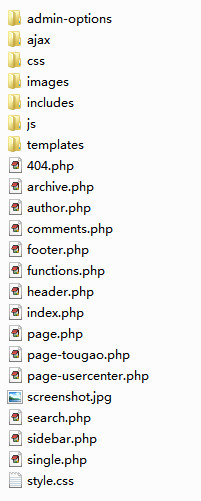

了解主题目录非常重要，因为我所开发的主题大多都具备非常强的扩展性，而且扩展方式特别简单，所以你需要把这一整章都看完再做开发。

简单看下目录里面的东西，你应该不会陌生吧。
page-tougao.php,page-usercenter.php是专门用来处理投稿和用户中心的，只有开启了众人投稿模式才用得到。
admin-options目录是我开发的一个后台管理面板框架，具体就不解释了，你可以到GitHub上去获取资料。
css,js,images目录下放了样式文件，脚本文件和图片。
ajax目录下放的是ajax请求处理程序，目前主要是注册和登录的程序。
includes目录下放的是各类PHP处理文件，一般都是每个文件执行一个功能，如果你有新功能，直接写一个文件，丢到这个目录下就可以了，会被自动include到functions.php中。